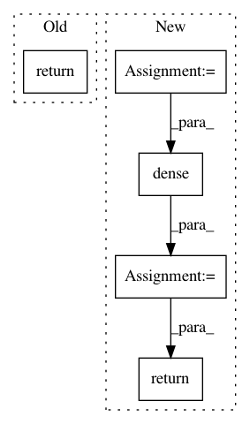

9f0eca493539f189c20c9bc5ecd3a353e682c8d7,pointcnn.py,,xconv,#Any#Any#Any#Any#Any#Any#Any#Any#Any#Any#Any#Any#Any#Any#Any#,10
Before Change
fts_X = nn_fts_input
fts_conv = pf.separable_conv2d(fts_X, C, tag + "fts_conv", is_training, (1, K), depth_multiplier=depth_multiplier)
return tf.squeeze(fts_conv, axis=2, name=tag + "fts_conv_3d")
class PointCNN:
def __init__(self, points, features, num_class, is_training, setting, task):
After Change
fts_conv_3d = tf.squeeze(fts_conv, axis=2, name=tag + "fts_conv_3d")
if with_global:
fts_global_0 = pf.dense(qrs, C // 4, tag + "fts_global_0", is_training)
fts_global = pf.dense(fts_global_0, C // 4, tag + "fts_global_", is_training)
return tf.concat([fts_global, fts_conv_3d], axis=-1, name=tag + "fts_conv_3d_with_global")
else:
return fts_conv_3d
In pattern: SUPERPATTERN
Frequency: 3
Non-data size: 5
Instances
Project Name: yangyanli/PointCNN
Commit Name: 9f0eca493539f189c20c9bc5ecd3a353e682c8d7
Time: 2018-04-16
Author: yangyan.lee@gmail.com
File Name: pointcnn.py
Class Name:
Method Name: xconv
Project Name: dpressel/mead-baseline
Commit Name: 45ba4bbdd47b51ee607a62b49a0cad1f0d9ff917
Time: 2019-05-21
Author: dpressel@gmail.com
File Name: python/baseline/tf/lm/model.py
Class Name: LanguageModelBase
Method Name: embed
Project Name: OpenNMT/OpenNMT-tf
Commit Name: 90c9bef26efb3dd32dcf3a5bf77bf349745222b6
Time: 2017-08-16
Author: guillaume.klein@systrangroup.com
File Name: opennmt/utils/transformer.py
Class Name:
Method Name: multi_head_attention